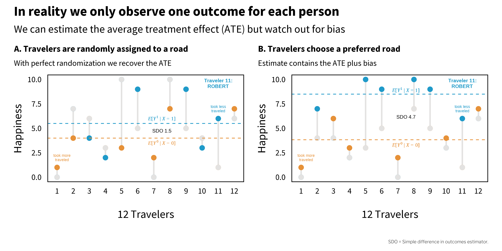
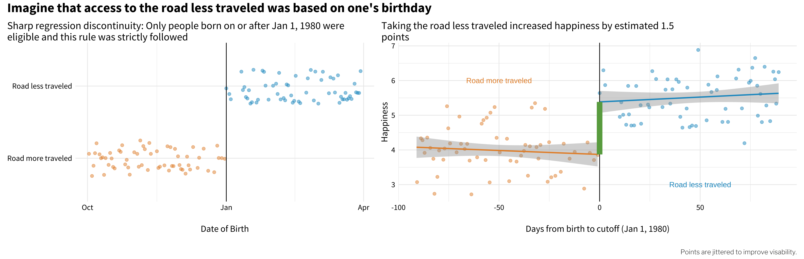

This is a real headline about a study published in the journal Circulation. Now, I’m as big a coffee fan as the next guy, but literally a life saver? Here’s what the study authors wrote in their paper (Ding et al., 2015):
Higher consumption of total coffee, caffeinated coffee, and decaffeinated coffee was associated with lower risk of total mortality…Relative to no consumption of coffee, the pooled hazard ratio for death was 0.95 (95% confidence interval [CI], 0.91–0.99) for 1.0 or less cup of total coffee per day.
This finding comes from a pooled analysis of three large prospective cohort studies of health professionals in the U.S. (95% white) followed for up to 36 years. Participants completed a food frequency questionnaire every few years that described their coffee intake, and researchers searched national and state death registries to gather data on deaths throughout the follow-up period.
“Associated with†tells us that there’s a relationship between mortality and coffee consumption in the observed data. The sort of people who drink a cup of coffee daily have a 5% lower risk of dying over 2 to 3 decades. (This is a 0.7% absolute decrease in the incidence of mortality according to my back of the envelope analysis.) Does this mean that coffee prevents death?
The study authors say no. But also, maybe! This is what I call Causal Deniability. (For more examples, see Haber et al., 2018.)
Haber, N. et al. (2018). Causal language and strength of inference in academic and media articles shared in social media (CLAIMS): A systematic review. PloS One, 13(5), e0196346.
Step 1: Avoid the word “causal†and warn that correlation is not causation.
…given the observational nature of the study design, we could not directly establish a cause-effect relationship between coffee and mortality.
Step 2: Ignore the warning and make policy or health recommendations based on a causal interpretation of the findings.
…coffee consumption can be incorporated into a healthy lifestyle…moderate consumption of coffee may confer health benefits in terms of reducing premature death.
So which is it, a non-causal association or a causal effect? Hernán (2018) argues that scientists need to stop the charade:
We know Ding et al. had causal inference in mind because they adjusted for potential confounders like age. As Hernán reminds us, “confounding is a causal concept that does not apply to associations”.
We need to stop treating “causal†as a dirty word that respectable investigators do not say in public or put in print. It is true that observational studies cannot definitely prove causation, but this statement misses the point…
According to Hernán (2018), the point is that we have to be clear about our scientific goals and use language that reflects these goals. To riff on his idea a bit: Do we want to determine whether “the sort of people who drink a cup of coffee daily have a lower risk of dying†or do we want to determine whether “drinking a cup of coffee daily lowers the risk of dying�
Hernán, M. A. (2018). The c-word: Scientific euphemisms do not improve causal inference from observational data. American Journal of Public Health, 108(5), 616–619.
It’s almost always the latter.1 And to answer this question, we need causal inference.
Causal inference is what we do when we identify and estimate the causal effect of some proposed cause on an outcome of interest. We use causal inference methods in global health to answer key questions about health policy and practice. Do bed nets prevent malaria, and by how much? Is it better to subsidize bed nets or sell them at full retail cost? And so on.
Figure 3.1: Causes, effects, and outcomes
As someone who has likely perfected the art of causal inference in your daily life, you might be surprised to learn that causal inference in science is still a rapidly evolving field. Even core terms like cause and effect are up for debate.
Effects of causes or causes of effects?
The most common type of causal inference question we ask is about the effects of causes. What is the effect of 𝑋 on 𝑌? For instance, what is the effect of a new therapy on depression severity? Given a well-defined cause, 𝑋, we can estimate what happens to 𑌠if 𝑋 changes. Questions about the causes of effects—what causes 𝑌?—are harder to answer. For example, what causes depression?
CAUSES
Watch Dr. Judea Pearl discuss what he calls the new science of cause and effect.
The Turing Award-winning computer scientist Dr. Judea Pearl and his co-author, mathematician-turned-science writer Dr. Dana Mackenzie, offered the following definition of causes in their 2018 instant classic, The Book of Why(Pearl et al., 2018):
A variable 𑋠is a cause of 𑌠if 𑌠“listens†to 𑋠and determines its value in response to what it hears
This definition has several implications for causal relationships (Shadish et al., 2002):
Causes must come before effects. 𑋠speaks and then 𑌠listens.
Causes and effects are associated, meaning they go together or covary. When 𝑋 happens, 𑌠is more likely to happen. I say “more likely†because the effect does not always need to happen for there to be a causal relationship between 𝑋 and 𝑌. For instance, smoking increases the probability of developing lung cancer, but not all smokers will develop lung cancer. Most of the relationships we study in global health are like this—probabilistic in nature, not deterministic.
There are no other plausible alternative explanations for the effect other than the proposed cause. In other words, 𑌠listens to 𝑋 and not to something else that also happens to be related to 𝑋. During the smoking debate of the 1950s and 1960s, some proponents of smoking asked whether the apparent causal link between smoking and lung cancer could be explained by a smoking gene that predisposed people to smoking and to lung cancer.2
The need to rule out plausible alternative explanations keeps many researchers up at night. Claims from studies that fail to do this convincingly are characterized as having low internal validity. In other words, there is not a strong justification for inferring that the observed relationship between 𑋠and 𑌠is causal.
Causes in global health research
We study a variety of potential causes in global health research and call them by different names. For instance, global mental health researchers often develop and test interventions delivered to individuals or groups to prevent or treat conditions such as depression. Development agencies administer programs to improve people’s well-being, including economic assistance programs intended to reduce poverty. Clinical researchers and biostatisticians test the efficacy of drugs and medical devices, generally referred to as treatments or therapies, on health outcomes, such as the COVID-19 vaccinations developed in 2020. Policy researchers and health economists study the health and financial impacts of policies, such as removing fees to deliver a baby at public health facilities. Epidemiologists estimate the effect of exposures, such as smoking, on the health status or prognosis of a target population.
No causation without manipulation?
Some scholars believe that it must be possible to manipulate, or change, a variable for that variable to be considered a cause. This would exclude immutable variables such as age and genetic sex as causes of effects because there is not currently a way to plausibly intervene to change them. This is sometimes framed as the need for a “well-defined intervention”. I don’t personally agree with the “no causation without manipulation†mantra, but I value the way it encourages us to focus on research questions that can improve public health.
EFFECTS
Causal inference is an exercise in counterfactual thinking, full of “what if†questions about the road not taken. We ask ourselves these questions all the time. What would have happened if I had taken that job? Said “yes†instead of “no� How would life be different today?
Counterfactuals and potential outcomes
A counterfactual is the hypothetical state of a “what if†question. With counterfactual thinking, there is what actually happened, and then there is the hypothetical counterfactual of what would have happened, counter to fact, under the alternative scenario. The difference between what did happen and what would have happened is a known as the causal effect.
Robert Frost fans see the problem.
“The Road Not Taken”, by Robert Frost, The Atlantic Monthly, 1915.
Two roads diverged in a yellow wood, and sorry I could not travel both and be one traveler…
Robert has to choose one road; he can’t take both simultaneously. Robert can either take the road more traveled, a decision we’ll call 𑋠= 0, or he can take the road less traveled, a decision we’ll call 𑋠= 1.
What’s with the Xs and Ys, 1s and 0s?
In some ways it might be easier to refer to Robert’s decision as the variable road, or ğ‘…, and set the values of road to “more traveled†or “less traveled”, representing his two choices. But instead I’m referring to his decision as 𝑋 and to the values of 𝑋 as 0 (more traveled) or 1 (less traveled). Why?
Often we refer to potential causes as 𝑋 and to response variables as 𝑌. And typically, when the treatment (or exposure) 𝑋 can take two levels, such as treated/not treated, we label treated 1, and not treated 0.
In this example, I imagine Robert looking left and then looking right. Observing that the second path was “grassy and wanted wear”, he decided to go right, taking the “one less traveled by”. Frost claims that his decision to take the uncommon path “made all the difference”, so I’m labeling this path (less traveled) as the treatment, 𝑋 = 1.
Robert’s two choices correspond to two potential outcomes, or states of the world, that he could experience (Rubin, 1974). There is the potential outcome that results from taking the road more traveled, and the potential outcome that results from taking the road less traveled. We’ll call these scenarios Y𝑖X=0 (what happens if he takes the road more traveled) and Y𝑖X=1 (what happens if he takes the road less traveled).
Rubin, D. B. (1974). Estimating causal effects of treatments in randomized and nonrandomized studies. Journal of Educational Psychology, 66(5), 688.
So what does he do? He famously takes the road less traveled. Robert’s factual outcome is what happens after making this choice. His other potential outcome will never be observed. Taking the road more traveled is now the counterfactual. He can only wonder what would have happened, counter to fact, if he had taken the beaten path.
Could Robert experience the counterfactual by returning at a later date to take the other road? No, because he wouldn’t be the same person who stood there at the start. He could not un-experience the road less traveled. Also, we’d be measuring his happiness at two different points in time. Besides, he did not expect to return: “Yet knowing how way leads on to way / I doubted if I should ever come back.”
And yet, Robert boldly claims that taking the road less traveled “made all the difference”. How can he know for sure? We defined causal effects as the difference between what did happen and what would have happened, but we only observed what happened, not what would have. Therefore, we have a missing data problem.
This is what’s often called the fundamental problem of causal inference(Holland, 1986): we only get to observe one potential outcome for any given person (or unit, more generally). The causal effect of taking the road less traveled is the difference in potential outcomes: 𝛿i = ğ‘Œğ‘–ğ‘‹=1 - ğ‘Œğ‘–ğ‘‹=0, but ğ‘Œğ‘–ğ‘‹=0 is missing. Therefore, we can’t measure this effect for Robert (𝑖).
Holland, P. W. (1986). Statistics and causal inference. Journal of the American Statistical Association, 81(396), 945–960.
Average treatment effect
We can, however, compare groups of people like Robert who take one road or the other and estimate the average treatment effect, or ATE. I’m emphasizing “estimate†because truly calculating the ATE would require knowing both potential outcomes for each person (or unit, like classrooms or schools). We can only observe one potential outcome for any given person, but let’s ignore this for a moment to understand the true ATE.
The average treatment effect is also called the sample average treatment effect, or SATE.
While we’re pretending, let’s imagine that the response variable Robert writes about in his poem is happiness later in life, and happiness, or 𝑌, is measured on a scale of 0 to 10 where 0 is not at all happy and 10 is very happy.
Figure 3.2 shows fictional happiness data for a sample of 12 people, including Robert, under both potential outcomes. Notice how each person in the left panel has two values: the happiness that would result if they took the road less traveled (𝑋=1) and the happiness that would result if they took the road more traveled (𝑋=0). Some people, like Traveler 1, would be happiest taking the road more traveled, whereas other people, such as Robert (11), would find greater happiness on the road less traveled. (Remember, we’re pretending here. We never observe both potential outcomes.)
Figure 3.2: Potential outcomes, part 1.
As shown in the right panel of Figure 3.2, the ATE is calculated as the difference between group averages (𝐸[ğ‘Œğ‘–ğ‘‹=1]-𝐸[ğ‘Œğ‘–ğ‘‹=0]), which is equivalent to the average of traveler’s individual causal effects. In this example where we are all knowing, the ATE is 1.5; taking the road more traveled increases happiness on average by 1.5 points on a scale of 0 to 10.
We’re not all knowing, of course, and we only get to observe one potential outcome for each person. This means we have to estimate the ATE by comparing people like Robert who take the road less traveled to people who take the road more traveled. But how do people come to take one road versus the other?
Figure 3.3 shows two scenarios (of an infinite number). On the left (A), travelers are randomly assigned to a road. Imagine that they come to the fork in the road and pull directions out of a hat. Half are assigned to the road less traveled, and half to the road more traveled. On the right (B), however, travelers choose a road themselves. Imagine that they go with their gut and all happen to pick the road that maximizes their individual happiness. In both panels, the grey dots represent the unobserved counterfactuals.

Figure 3.3: Potential outcomes, part 2.
Notice that under perfect randomization (left, A), the estimated ATE 1.5 is equal to the true (but unknowable) ATE. But on the right (B), when travelers selected their own road, the estimate is 4.7. This does not line up with the true ATE because the estimate includes bias. Remember that bias is anything that takes us away from the truth.
The simple difference in outcomes (SDO) is an estimator for the ATE. It contains the ATE plus bias.
Cunningham (2020) very effectively shows how to decompose the simple difference estimator (SDO) into three parts: the ATE, selection bias, and heterogeneous treatment effect bias. Selection bias occurs when we are comparing unequal groups. Heterogeneous treatment effect bias occurs when a treatment (or exposure) has differential effects on units based on their characteristics.
As we will see in later chapters, randomization can be a very effective way to neutralize selection bias, but randomization is not always possible or maintained. Most research is non-experimental, or what many would call observational. Thus even if we assume that treatment effects are constant (effectively ignoring heterogeneous treatment effect bias), selection bias will remain a threat in many cases. Unfortunately for us, we can’t simply calculate it and subtract it away because the exact quantity is typically unknowable. That leaves us with with research design and statistical adjustment as our only defense. As Cunningham (2020) states:
One could argue that the entire enterprise of causal inference is about developing a reasonable strategy for negating the role that selection bias is playing in estimated causal effects.
CAUSAL INFERENCE METHODS
Watch Dr. Esther Duflo’s speech at the Nobel Banquet, 10 December 2019.
There are different causal inference methods for addressing selection bias, and which one a researcher chooses tends to be heavily influenced by their context and discipline. For instance, clinical researchers, biostatisticians, and behavioral interventionists often prefer to use experimental designs that randomly allocate people (or units) to different treatment arms.3 There is also a rich tradition of experimentation in the social sector among economists and public policy scholars. Economists Abhijit Banerjee, Esther Duflo, and Michael Kremer won the 2019 Nobel Prize in Economics4 for their experimental approach to alleviating global poverty.
But as I stated previously, many research questions in global health are not amenable to experimentation, and the approach to causal inference must be rooted in non-experimental (or observational) data. Matthay, Hagan, et al. (2020) divide these non-experimental approaches into two main buckets: confounder-control and instrument-based. Confounder-control is characterized by the use of statistical adjustment to make groups more comparable. You’ll find many examples of confounder-control in epidemiology and public health journals. Instrument-based studies, sometimes called quasi-experimental designs, estimate treatment effects by finding and leveraging arbitrary reasons why some people are more likely to be treated or exposed. Instrument-based studies are quite common in economics and psychology. I’ll introduce each approach in turn.
Additional causal inference frameworks
Bradford Hill’s Considerations. In 1965, Epidemiologist and statistician Sir Austin Bradford Hill proposed a set of nine domains to consider when evaluating the evidence for a causal relationship: (1) strength, (2) consistency, (3) specificity, (4) temporality, (5) biological gradient, (6) plausibility, (7) coherence, (8) experiment, and (9) analogy. It does not feature prominently in current debates about causal inference, and it’s commonly misapplied. Modern Epidemiology has a good summary and critique: ghr.link/mod.
Sufficient Cause Framework and Causal Pies. The sufficient-component cause model is an approach for conceptualizing cause and effect used largely for pedagogical purposes. Dr. Kenneth Rothman defined sufficient causes as the minimal set of conditions that produce a given outcome. This set of causes is often represented by pie charts.
3.2 Causal Diagrams and Confounder-Control
Confounding is a type of bias where variables 𝑋 and 𑌠share a common cause ğ‘ that explains some or all of of the 𝑋𝑌 relationship. You’re likely familiar with examples of confounding like ice cream sales and violent crime. If you look just in the data, it looks like increases in ice cream sales could be causing increases in violent crime (or maybe vice versa), but this is what we call a spurious correlation. Ice cream sales and violent crime are both more common when the weather is warm. Once you statistically control for weather, let’s say by looking just at sales on hot days, there is no relationship between ice cream sales and crime.
Causal relationships observed in non-experimental contexts are at high risk of confounding, and the goal of confounder-control studies is to find and statistically adjust for a sufficient set of variables to eliminate confounding. But this is not just an exercise in statistics because data are profoundly dumb (Pearl et al., 2018). A dataset cannot tell you which variables to adjust for, or what is a cause and what is an effect. For that you need information that lives outside of statistical models. You need causal models that are informed by domain expertise (McElreath, 2020).
Pearl, J. et al. (2018). The book of why: The new science of cause and effect (1st ed.). Basic Books, Inc.
Watch Dr. Nick Huntington-Klein introduce causal diagrams.
For this reason, a graphical approach based on causal diagrams has emerged as a popular tool for causal inference in confounder-control studies (Pearl, 1995).5 The most common type of graphical model you’ll encounter is the causal directed acyclic graph, or DAG. Figure 3.4 shows an example DAG of the effect of taking the road less traveled on happiness.
Pearl, J. (1995). Causal diagrams for empirical research. Biometrika, 82(4), 669–688.
Figure 3.4: Causal directed acyclic graph (DAG) of the effect of taking the road less traveled on happiness.
CAUSAL STORIES
Dr. Scott Cunningham’s book, Causal Inference: The Mixtape, is worth every penny. If you’re short on pennies, read it online for free.
Cunningham (2020) frames DAGs as storytelling devices. The story I am telling with this DAG is that the road traveled causes happiness directly and indirectly by creating new social relationships. This DAG also shows my assumption that happiness AND the decision to take the road less traveled are both caused in part by one’s cognitive style (e.g., sense of optimism); they share a common cause. Happiness is also caused by income which, like cognition, is a function of background characteristics like genetics and family.
Before I even do anything with this DAG, or any DAG I create, I’ve accomplished a lot just by drawing my assumptions. The DAG represents my belief in the data generating process. It includes all nodes and connections that I believe are relevant to the effect of road traveled on happiness. I’ve made my assumptions clear and can proceed to identify how I will estimate the causal effect of interest.
Now you might call bullshit, and that’s OK. You can draw a different DAG that might have different implications for the best analysis strategy. You and I should be able to defend our assumptions and be open to modifications based on subject matter criticism. But whether you draw a DAG or not, there is no escaping the need to make assumptions. DAGs just help to make your assumptions clear and transparent.
COMPONENTS OF A DAG
As a graph, DAGs consist of nodes and edges (or arrows). Nodes are variables like our exposure of interest, the road traveled, and our outcome of interest, happiness later in life. Nodes can take any form, from discrete values of road traveled (more traveled, less traveled) to continuous values of income. A DAG can include observed (measured) variables and unobserved variables, including background factors such as genetics.
Figure 3.5: The same DAG again, reprinted for your convenience.
Nodes are connected by edges, directed arrows that make causal statements about how two variables are related. For instance, by drawing an arrow from road traveled to happiness, I’m asserting that the road one travels causes happiness. Arrows do not indicate whether this relationship is positive or negative, just that road traveled influences happiness. Equivalently, the absence of an arrow between nodes implies that there is no causal relationship.
The only hard rule in a DAG is that cycles are not permitted. Arrows can go into and out of a node, but there must not be any recursive pathways. For instance, social relationships ⟶ happiness ⟶ social relationships is not allowed. Causal effects must only flow forward in time. Spirals are allowed, however, and offer a way to represent that causal relationships between variables measured at different time points (e.g., social relationships_t1 ⟶ happiness_t2 ⟶ social relationships_t3 ⟶ happiness_t4).
There are three possible relationship structures in a DAG (McElreath, 2020):
Forks: In forks like road traveled ⟵ cognition ⟶ happiness, cognition is a common cause of the focal variables of interest. As such, cognition confounds the causal effect of road traveled on happiness; some (or all) of the observed association is due to cognition. When you see a fork, you should think confounding.
Pipes: Pipes (or chains) involve mediator variables like social relationships that represent an indirect causal chain of effects. For instance, road traveled causes new social relationships which causes happiness. Whether or not you are interested in the indirect causal effect depends on your research question.6
Colliders: Colliders (or inverted forks) are closed pathways like road traveled ⟶ active lifestyle ⟵ happiness where a node on the pathway only has incoming arrows. These pathways are closed by default and only open when conditioning on the collider, thereby distorting the relationship between road traveled and happiness.
As you will see shortly, being able to recognize these relationships will help you to identify your causal effect of interest.
Descendants and ancestors
Graphs like DAGs can also be described by the ancestry of the nodes. A descendant variable has at least one incoming arrow. Economists would call this an endogenous variable (vs an exogenous variable like background that has no incoming arrows). In the example DAG, happiness and social relationships are descendants of road traveled. Specifically, social relationships is a child of road traveled, and road traveled is its parent. Therefore, road traveled and social relationships are ancestors of happiness.
DECIDE WHICH NODES TO INCLUDE IN A DAG
In order to use a DAG to identify a causal effect, you must include all of the relevant nodes and paths (Rohrer, 2018). As you can probably imagine, this can get out of hand quickly. Just look at the slide in Figure 3.6 that diagrams the American military’s perceived challenge in its war in Afghanistan.
This includes variables that you can measure and the ones you can’t (or didn’t) observe.
Figure 3.6: War is hard. Source: U.S. Joint Chiefs of Staff. (Not a DAG, per se, but you get the point.)
Dr. Huntington-Klein’s book, The Effect: An Introduction to Research Design and Causality, should be on your bookshelf. If you’re not in a position to purchase it today, read it online for free.
Huntington-Klein (2021) frames DAG creation as a balancing act:
On one hand, we want to omit from the diagram every variable and arrow we can possibly get away with. The simpler the diagram is, the easier it is to understand, and the more likely it is that we’ll be able to figure out how to identify the answer to our research question…On the other hand, omitting things makes the model simpler. But the real world is complex. So in our quest for simplicity, we might end up leaving out something that’s really important.
A piece of practical advice is to draw a basic DAG and then add additional variables (nodes) only if you believe they causally affect two or more existing nodes in the DAG (Rohrer, 2018). For instance, maybe you could argue that being left handed also contributes to one’s decision to take the road less traveled. If handedness does not have an arrow into any other nodes, you can safely leave it out of the DAG.
Rohrer, J. M. (2018). Thinking clearly about correlations and causation: Graphical causal models for observational data. Advances in Methods and Practices in Psychological Science, 1(1), 27–42.
If this feels daunting, you’re doing it right. Science is hard, and I predict that you’ll find this process easier if you have the humility to know that, at best, your study will approximate the truth. There is a very good chance that your DAG will be wrong or incomplete. Your colleagues might tell you as much. This is part of the scientific process. Criticism should lead you to revise your DAG or strengthen how you defend your assumptions.
TRACING ALL PATHS
Once you’ve drawn your DAG, the next step is to list all of the paths from the proposed cause to the outcome of interest. In this example, it means tracing all of the paths that go from road traveled to happiness.
Start with road traveled and move your finger along each path until you get to another variable or to the outcome, happiness. When you encounter variables with arrows coming in or out, trace each path to the outcome. The direction of the arrows does not matter for tracing, just don’t trace back to variables you’ve already visited (in other words, no loops).
road traveled ⟶ happiness
road traveled ⟶ social relationships ⟶ happiness
road traveled ⟵ cognition ⟶ happiness
road traveled ⟵ cognition ⟵ background ⟶ income ⟶ happiness
road traveled ⟶ active ⟵ happiness
View the example DAG or create your own at DAGitty.net.
You can check your work—or skip the manual tracing process entirely—by creating and analyzing your DAG in R. While you can manually enter your graph into R, a shortcut is to create your DAG visually in your browser at DAGitty.net and copy/paste the model code into R. The function paths() returns the same five paths we traced by hand.
Next we need to determine which paths are good and which are bad (Huntington-Klein, 2021). “Good paths†identify our research question. “Bad paths†are the alternate explanations for the causal effect that we need to close. In our example DAG, as in many DAGS, good paths often start with an arrow exiting the proposed cause and bad paths have arrows entering the proposed cause.
An exception would be if we are only interested in the direct effect of road traveled on happiness, we would label the mediation pathway through social relationships as a bad path and work to close it.
Figure 3.7 visualizes the five paths in our example DAG and labels them good or bad. Notice that paths 1 and 2—the good paths—start with road traveled and flow forward to happiness. The rest are backdoor paths that we need to close.
Figure 3.7: Good and bad paths in our example DAG.
Dr. Andrew Heiss has a great tutorial on ways to close backdoors through regression, inverse probability weighting, and matching.
Open backdoor paths bias the causal effect we want to estimate, so we need to close them. We can do this by conditioning on variables that confound the causal effect of interest through techniques like regression. The neat thing is that we do not necessarily need to control for every possible confounder, just a minimum set sufficient to close all backdoor paths.7 For instance, in Figure 3.7, you can see that adjusting for cognition in paths 3 and 4 is sufficient to close the open backdoor paths.
Path 5 is also a backdoor path, but it’s closed by default because active is a collider (see the two incoming arrows). If we condition on active, let’s say by including it as a covariate in our regression, we will inadvertently open this path and introduce bias. There is such a thing as a bad covariate, and sometimes less is more when it comes to statistical models (McElreath, 2020; Westreich et al., 2013).8
Westreich, D. et al. (2013). The table 2 fallacy: Presenting and interpreting confounder and modifier coefficients. American Journal of Epidemiology, 177(4), 292–298.
The logic of d-separation is rooted in Pearl’s do-calculus. Learn more in The Book of Why or this resource that Heiss created.
If this DAG is correct and complete, adjusting for (controlling for) cognition on the backdoor path makes the relationship between road traveled and happinessd-separated (direction separated) from all other nodes. In other words, the causal effect is said to be identified.
EFFECT ESTIMATION
There are various statistical techniques to cut the bad paths so they don’t bias our causal effect of interest. I’ll show you regression. See Heiss (2020b) for other examples.
For this example, I simulated a dataset on 1000 people who decided to take the road less traveled or the road more traveled.9 This is an observational dataset. There was no random assignment to road_traveled. The core variables include:
Simulation is the only way to demonstrate that controlling for cognition recovers the correct effect. In real world datasets you don’t know the right answer. If you did, causal inference would be easy.
cognition (confounding variable): A binary (0/1) variable set to 1 if the person scored high on a measure of optimism, otherwise 0. Imagine that everyone completed a questionnaire before they decided on a road. This questionnaire included items that assessed aspects of their cognitive style, and we used their answers to construct an indicator of high/low optimism.
road_traveled (exposure/treatment): A binary (0/1) variable set to 1 if the person chose the road less traveled, otherwise 0. This variable was simulated to be a function of cognition. In this dataset, the odds of taking the road less traveled are 18 times higher for high optimism folks.
happiness (outcome): A variable that can range from 0 to 10, where 10 represents greatest happiness. Imagine that data on happiness was collected 10 years after people selected and traveled down one of the roads. This variable was simulated to be a function of cognition and happiness. On average, high optimism folks scored 1 point higher on the measure of happiness.
active (collider): A binary (0/1) variable set to 1 if the person has an active lifestyle. Imagine that this variable was collected at sometime after the person traveled the road. This variable was simulated to be a function of road_traveled and happiness. active does not cause anything in the model.
I simulated the data so that the road less traveled increases happiness by 1.5 points. That will be the correct answer going forward. Here are my receipts:
Figure 3.8: cognition confounds the 𝑋𝑌 relationship.
Figure 3.8 should remind you that our core problem in this DAG is that the exposure (road_traveled) and the outcome (happiness) share a common cause: cognition. This is to say that cognition confounds the relationship between 𝑋 and 𝑌.
You can see this visually in Figure 3.9. In the left panel, people who scored high on optimism are represented in red (vs low in black). Notice that red appears more frequently among the road less traveled group AND red looks to be associated with higher happiness scores. If we just compare happiness scores by road traveled, we get the wrong answer (difference of 2.07). This is because cognition biases the 𝑋𝑌 relationship.
Remember, we know the correct answer is 1.5 because that’s how I simulated the data generating process.
To get to the right answer, we need to hold cognition constant. In the right panel I show this by looking just at people with a low optimism score. Now if we compare happiness scores by road traveled, we get close to the correct answer (difference of 1.47).10
Figure 3.9: Confounding
A Solution: Multiple Regression
In practice we might estimate the effect via a technique like multiple regression, which I’ll show you here.11 You’ll see that I modified the variable names to make Figure 3.10 easier to read. Most notably, the exposure road traveled is represented as x and the outcome happiness is represented as y. Cognition and active are simply c and a, respectively.
y ~ x: naive regression of happiness (y) on road_traveled (x)
y ~ x + c: same as (1) but also controlling for cognition (c)
y ~ x + c + a: same as (2) but also controlling for active (a)
Figure 3.10: Multiple regression models
The red model y ~ x repeats the same mistake as above. It just estimates the impact of road traveled x on happiness y without accounting for the confounding role of cognition c. It returns the wrong answer.
The green model y ~ x + c controls for cognition c, thereby removing the parts of x and y that are explained by c(Heiss, 2020a). This closes the biasing pathway and returns the correct answer.
Heiss, A. (2020a). Causal inference. In R for political data science (pp. 235–273). Chapman; Hall/CRC.
This should not be surprising. I simulated the data generating process with c confounding the relationship between x and y. Our DAG was therefore correct, and controlling for c recovers the simulated effect.
The blue model y ~ x + c + a gets us into trouble. In the data I simulated, active a is a collider. It doesn’t cause anything in the DAG, and the bad path it sits on is closed by default. When I control for it by adding it to the regression, I open the pathway and distort the relationship between x and y.
It might come as a surprise that something can go wrong by adding covariates to your model. Many of us are taught that it’s probably good or at least neutral to add all seemingly relevant variables to a regression. This is just bad advice. Some covariates will make your estimates worse, not better.
Watch Dr. Richard McElreath’s excellent talk, Science Before Statistics: Causal Inference.
McElreath (2020) uses the term causal salad to describe this very common practice of tossing lots of “control†variables into a statistical model and telling a causal story. This approach can work when the goal is prediction, but it can go very very wrong when the goal is causal inference. One of his core points in Statistical Rethinking is that causal inference requires causal models that are separate from statistical models. Statistics alone can get us to the wrong answers. But if we follow the DAG—our causal model—we know to leave active alone.
THE BIG FINE PRINT
DAGs are useful tools for causal inference, but they are not magic. If your DAG does not completely and correctly identify your causal effect of interest, your estimates will be biased. To make matters worse, there is no test that will tell you if you got it right or wrong.12
A step I skipped for space is verifying conditional independencies. DAGitty.net and the {dagitty} R package will get you started.
But let’s be clear: there is no approach to causal inference that sidesteps the need for unverifiable assumptions (McElreath, 2020). DAGs require you to make and defend your assumptions, but so does every other approach (you just might not know it).
3.3 Instrument-Based Approaches and Quasi-Experimental Designs
If confounder-control is about closing backdoors through statistical adjustment, instrument-based approaches are about isolating front doors (Huntington-Klein, 2021). These approaches are sometimes called quasi-experimental designs because they attempt to mimic the beauty and logic of a perfectly conducted randomized controlled trial (RCT).
As shown in Figure 3.11, RCTs (experiments), are effective because they close all backdoors that run from the proposed cause to the outcome. For instance, if we were somehow able to randomly assign people to the road less traveled or the road more traveled—and if people complied with these assignments—then the only arrow into road_traveled would be randomization. Randomization would be the only cause of road_traveled.
Figure 3.11: Observational DAG vs experimental DAG.
Randomization destroys confounding. This includes confounding from variables you think to measure, like cognition in this example, as well as variables that you can’t or don’t measure for whatever reason. This idea is so powerful that many people refer to experiments as the gold-standard when it comes to causal inference.13
EXOGENOUS VARIATION WITHOUT RANDOMIZATION
When randomization is not possible, confounding is likely. You can try to account for this confounding statistically (confounder control), or you can search for partial causes of the exposure/treatment that are unrelated to the outcome. Sometimes you can get lucky and find an exogenous source of variation in the exposure/treatment and use it to identify the causal effect.
For instance, imagine that we couldn’t randomize who travels which road, but we could restrict access to the road less traveled to people born on or after January 1, 1980. By this arbitrary rule, someone born on January 1, 1980 would be allowed to pass, but someone born on December 31, 1979 would have to take the road more traveled. This is the basic setup for a regression discontinuity design that fits in the instrument-based or quasi-experimental bucket (Figure 3.12).
Figure 3.12: Regression discontinuity DAG.
In this design, birthdate ≥ 1980-01-01 is an instrument that causes exogenous variation in who is exposed to the road less traveled (see the left panel of Figure 3.13). This variation is almost as good as randomization because the cutoff is arbitrary. Furthermore, when we limit our investigation to people born right around this arbitrary cutoff, any potential link between birthdate and the outcome is broken. We’d argue that people born just before and just after the cutoff are similar in many observable and unobservable ways. The only difference is that people born before the cutoff weren’t allowed to take the road less traveled. This isolates the front door from road_traveled to happiness.

Figure 3.13: A regression discontinuity example.
The key to this design, and others in this category, is that the instrument changes the probability of exposure (treatment) WITHOUT having any other mechanism of impacting the outcome (Matthay, Hagan, et al., 2020). In a later chapter we’ll see examples of regression discontinuity in practice, along with other quasi-experimental designs like instrumental variables, difference-in-differences, and interrupted time series.
3.4 Key Assumptions and Threats to Internal Validity
I listed three requirements for causal relationships when I defined causes:
causes must come before effects;
causes and effects are associated, meaning they go together or covary; and
there are no other plausible alternative explanations for the effect other than the proposed cause.
The third requirement—no other plausible alternative explanations—is the hardest of them all to meet. Every approach to causal inference relies on mostly untestable assumptions related to this requirement.
A key assumption, no confounding, is known by different names across disciplines: ignorability of the treatment assignment (statistics), conditional independence (economics), and (conditional) exchangability (epidemiology) (Gelman et al., 2020). This assumption says that there is no relationship between the treatment (or exposure) someone receives and their potential outcomes. In observational studies, this assumption needs to hold after adjusting for any covariates. Matthay, Hagan, et al. (2020) gives the example of a violation of this assumption where people who are more likely to succeed across the board, regardless of treatment, are more likely to be treated. It would be like stacking the deck in favor of the treatment. Randomization destroys this confounding, but it’s a concern for observational studies. With confounder-control approaches in particular, you always have to worry about omitted variable bias—failing to adjust for the sufficient set of confounding variables.
Gelman, A. et al. (2020). Regression and other stories. Cambridge University Press.
Matthay, E. C., Hagan, E., et al. (2020). Alternative causal inference methods in population health research: Evaluating tradeoffs and triangulating evidence. SSM Population Health, 10, 100526.
No measurement error is another assumption, but I’ll save that for the chapter on content validity.
Once you adjust for a set of covariates, you must think about the assumption of positivity. It says that all possible covariate subgroups in your study must have a non-zero chance of being exposed to the treatment. For instance, if your adjustment set includes biological sex, it would be a positivity violation if males could not receive the treatment. If you are not adjusting for sex, this is not a concern. Westreich (2019) gives the example of adjusting for biological sex in a study about the effects of hysterectomy when it’s only possible for people with a uterus to undergo a hysterectomy. The solution is simple: biological sex should not be a covariate in your adjustment set.
Another assumption is consistency (or treatment variance irrelevance). This is the idea that any variations in a treatment or exposure are irrelevant to the causal effect (Westreich, 2019). For instance, if the intervention under investigation is text message reminders to promote medication adherence, consistency is the assumption that variations in timing of message delivery (e.g., morning or night) are not important for the effect of reminders.
These causal inference assumptions will be likely familiar to anyone who uses the potential outcomes framework or Pearl’s graphical causal models approach, but folks with a psychology or education background might be more accustomed to identifying and avoiding threats to internal validity in the Campbell tradition (Shadish et al., 2002). You’ll recall from earlier in this chapter that internal validity pertains to the robustness of a causal claim that the observed variation in 𑌠is caused by 𝑋. A study with a weak causal claim would be said to have low internal validity. Matthay & Glymour (2020) offer a helpful crosswalk between potential outcomes, DAGs, and the Campbell tradition, and West et al. (2010) compare Campbell’s approach with the potential outcomes approach (sometimes called the Rubin Causal Model).
Matthay, E. C., & Glymour, M. M. (2020). A graphical catalog of threats to validity: Linking social science with epidemiology. Epidemiology, 31(3), 376.
West, S. G. et al. (2010). Campbell’s and rubin’s perspectives on causal inference. Psychological Methods, 15(1), 18.
In the Campbell tradition, researchers are taught to identify the possible threats to internal validity, practice “control by design”, and strive for “coherent pattern matching”. In short, this means to think about the alternative plausible explanations for causal effects (threats), add design elements such as additional comparison groups to remove or reduce these threats (control by design), and make more complex hypotheses to raise the inferential bar and strengthen one’s causal claim (coherent pattern matching).
Plausible alternative explanations for the causal effect are threats to internal validity. Shadish et al. (2002) enumerate eight specific threats and warn that threats can accumulate (see Table 3.1). The core threat is confounding, which Shadish et al. (2002) frame as a selection threat.
Table 3.1: Threats to internal validity from Shadish et al. (2002).
Threat
Description
Ambiguous temporal precedence
Lack of clarity about which variable occurred first may yield confusion about which variable is the cause and which is the effect.
Selection
Systematic differences over conditions in respondent characteristics that could also cause the observed effect.
History
Events occurring concurrently with treatment could cause the observed effect.
Maturation
Naturally occurring changes over time could be confused with a treatment effect.
Regression artifact
When units are selected for their extreme scores, they will often have less extreme scores on other variables, an occurrence that can be confused with a treatment effect.
Attrition
Loss of respondents to treatment or to measurement can produce artifactual effects if that loss is systematically correlated with conditions.
Testing
Exposure to a test can affect test scores on subsequent exposures to that test, an occurrence that can be confused with a treatment effect.
Instrumentation
The nature of a measure may change over time or conditions in a way that could be confused with a treatment effect.
Internal validity is not a property of your research design per se; it’s a characteristic of your claim. While it’s true that some designs, like randomized controlled trials, face fewer threats to internal validity in theory, it’s also true that study implementation matters. The RCT label does not insulate a poorly conducted RCT from criticism. It’s best to think consider the internal validity of claims on a study-by-study basis. Also, there is not a statistical test that will tell you if your claim has high internal validity. You can use the results of various statistical tests to probe the support for your causal claim, but no test will tell you that a claim has high or low internal validity. P-values, for instance, are silent on the issue.
Violations of assumptions like exchangability, positivity, and consistency threaten the internal validity of a claim, but the Campbell tradition does not use these terms.
3.5 Coda: Coffee Saves Lives?
Before we wrap-up this chapter, let’s return to the opening question: Does drinking a cup of coffee daily lower the risk of dying? Ding et al. (2015) suggested that the answer is yes. What do you think?
Ding, M. et al. (2015). Association of coffee consumption with total and cause-specific mortality in 3 large prospective cohorts. Circulation, 132(24), 2305–2315.
The authors took a confounder-control approach to the analysis, but they did not share a DAG. All of the variables in Figure 3.14 are covariates they mentioned adjusting for in their analysis. Is this the complete set of relevant variables? What are the backdoors that need closing? Are there any colliders?
Figure 3.14: What’s in the DAG?
Causal inference is hard, especially when dealing with observational data. We can’t rely on data or statistics alone to answer causal questions. In short, we need causal models.
3.6 Keep Learning
Scott Cunningham’s “Causal Inference: The Mixtape”, ghr.link/cun
Nick Huntington-Klein’s “The Effect: An Introduction to Research Design and Causality”, ghr.link/eff
Richard McElreath’s “Statistical Rethinking”, ghr.link/sre
Morgan and Winship’s “Counterfactuals and Causal Inference: Methods and Principles for Social Research”, ghr.link/mor
Hernán and Robins’, “Causal Inference: What If”, ghr.link/wha
Daniel Westreich’s, “Epidemiology by Design”, ghr.link/wes